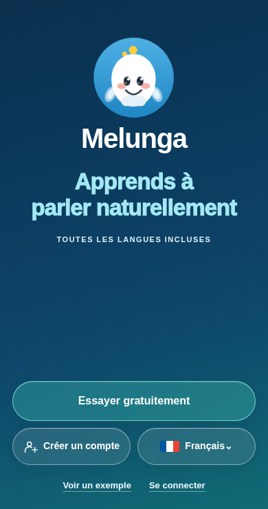
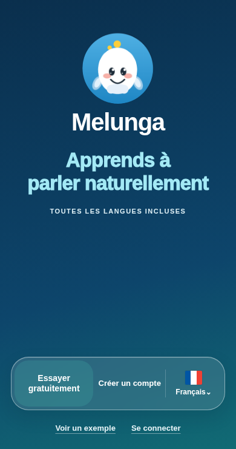
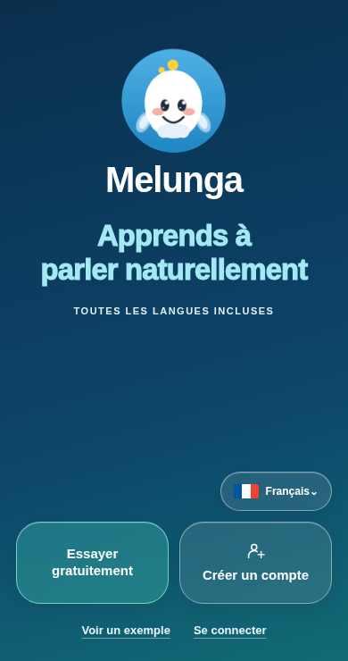
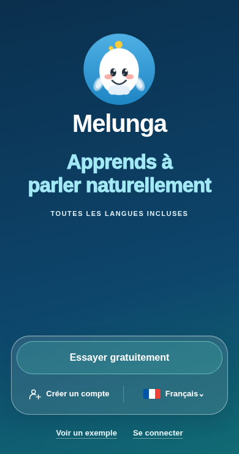

01
Trois capsules
L’essai en grand, puis le compte et la langue. Trois touches séparées et faciles à repérer.


Essayer gratuitement, créer un compte ou choisir la langue : quatre façons de réunir ces accès à portée de pouce, en gardant le logo au premier plan.
L’essai en grand, puis le compte et la langue. Trois touches séparées et faciles à repérer.

Les trois choix dans une seule capsule horizontale. C’est la proposition la plus discrète.

Essayer et créer un compte côte à côte. La langue reste juste au-dessus, dans sa petite capsule.

Un ensemble translucide sur deux rangées. L’essai ressort, les deux autres choix gardent leur place.
